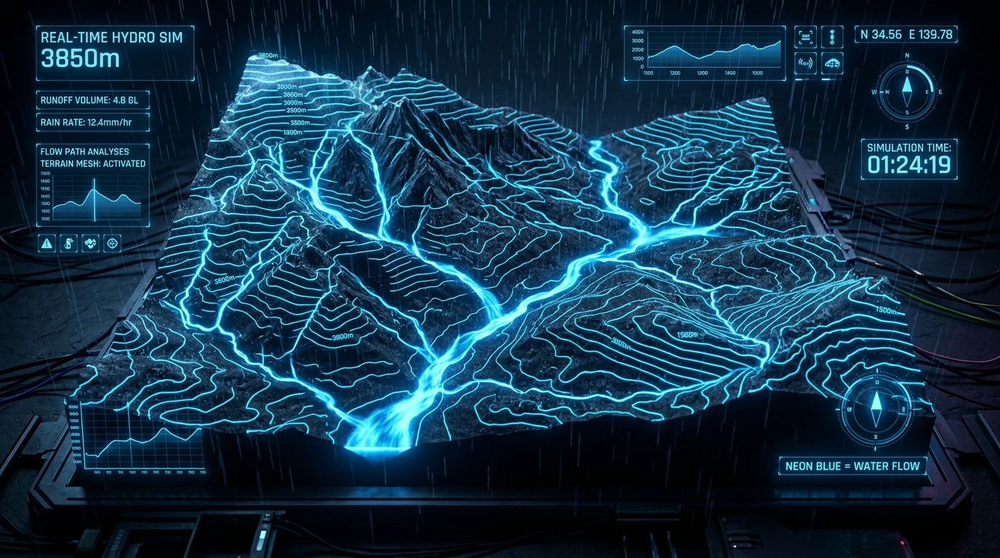

3D地形 × 浅水方程式。
降雨と水の流れをリアルタイム可視化
DEMやOBJなどの3D地形データに雨を降らせ、水がどのように集まり、流れていくかを浅水方程式（仮想パイプモデル）で高精度に物理シミュレーション。ブラウザ上で直感的に操作でき、無料お試し＆PRO買い切りライセンス対応。

研究から実務まで。直感と精度を両立した機能群
専門的な流体シミュレーションを、誰でも数クリックで直感的に扱えるモダンなデスクトップUIに凝縮しました。
3D地形インポート & リアルタイムプレビュー
QGISやBlenderから出力したOBJメッシュやDEMデータを即座に読み込み。標高に応じたカラーマップ（青=低地、茶〜白=高地）で3Dプレビュー。手元にデータがなくても、ボタン一つで複雑な谷を持つサンプル地形を自動生成できます。
直感的な降雨・環境パラメータ制御
天気予報でおなじみの「降雨強度 (mm/h)」や「降雨継続時間」を設定可能。さらに蒸発・浸透損失量、時間刻み dt、パイプ断面積係数を細かく調整でき、舗装路面から山林地まで多様な透水条件を柔軟にシミュレーションします。
降雨流出アニメーション (MP4/GIF出力)
陰影起伏図（ヒルシェード）に時間変化する水深を重ね合わせた高品質な流出アニメーションを生成。固定カラースケールにより、一目で水深の変化が把握可能。プレゼンや教材、論文報告に使えるMP4/GIF形式で書き出せます。
インタラクティブ最大水深 & ピーク時刻解析
シミュレーション全体の最大水深ヒートマップを生成。マップ上の任意の地点をクリックするだけで、その地点の「標高」「最大水深」「水深の時系列推移グラフ」、そして雨が止んだ後に訪れる「遅延ピーク時刻」まで精密に解析します。
集水・流路網マップ & 排水遅延アラート
各セルを通過した流量を時間積算したGIS流路網マップを対数表示。さらに「雨が止んだ後も水位が上昇し続けている危険地点」をオレンジ色で自動ハイライトし、上流からの流入が集中する滞水リスクエリアを瞬時に特定します。
質量収支検証 & 完全ローカルスタンドアロン
「降雨量 = 貯留 + 流出 + 損失」の質量保存則を自動検証し、数値計算の安定性を可視化。クラウドにデータを一切送信しないTauri + Pythonローカル設計のため、機密性の高い地形データも安全に扱えます。
LP上で体験する「地点別ピーク水深解析」
下のシミュレーション結果マップの各地点（尾根・斜面・谷底・合流点など）をクリックしてください。
地形ごとの水の集まり方や、ピーク時刻のズレをリアルタイムに体験できます。
※ 尾根は雨天直後にピークを迎えすぐ排水されますが、谷底や合流点は雨が止んだ後も上流からの流入で水位が上昇し続けます。
幅広い分野で活用される流水シミュレーション
専門的な土木防災からクリエイティブ、教育まで、多彩な現場で価値を発揮します。
防災計画・ハザード事前検討
局地的な豪雨（ゲリラ豪雨）が発生した際、どの谷筋に水が集まり、どのタイミングで低地が冠水するかを直感的に事前検証。自治体や自主防災組織の検討資料として。
土木・建築・敷地造成計画
造成地や法面、開発エリアにおける自然排水経路の確認や、雨水貯留施設・側溝配置の初期検討における迅速なシミュレーションツールとして。
地理・環境・大学での教育・研究
水文学や砂防工学、地形学の講義において、雨水流出や浅水方程式の挙動を視覚的に解説するインタラクティブな教材として最適です。
ゲーム開発・3D環境レベルデザイン
3Dゲームのフィールドマップや広大な自然環境において、リアルな川筋の浸食や湖の形成、水たまりの分布を物理ベースで導出・デザイン。
なぜ RainSimulator なのか？
高価で複雑な従来ツールや自作コードの課題をすべて解決。
| 機能・特徴 | RainSimulator (本アプリ) | 従来型GIS / 流体ソフト | Python自作スクリプト |
|---|---|---|---|
| 価格体系 | 買い切り ¥1,980（追加費用なし） | 年数十万円〜数百万円のライセンス | 無料（膨大な開発・保守コスト） |
| 導入・操作性 | GUIで即操作・専門知識不要 | 専門講習や複雑な設定が必要 | CUI / コード修正・デバッグ必須 |
| 3Dプレビュー & 動画出力 | 標準搭載 (MP4/GIF/3D回転) | 別ソフト連携が必要な場合が多い | 描画コードの自前実装が必要 |
| 地点別ピーク時刻解析 | ワンクリック即時グラフ表示 | データ抽出・加工が必要 | 手動ログパースが必要 |
| 動作環境 | Win / Mac デスクトップで即起動 | ハイスペックWSや専用環境 | Python環境構築・依存関係管理 |
シンプルで明快な買い切りプライス
サブスクリプションではありません。一度の購入で最新デスクトップアプリを永続利用いただけます。
Terrain Rainfall-Runoff Simulator
よくあるご質問
標準的なWavefront OBJ形式のポリゴンメッシュに対応しています。QGISやBlender、GISツールから書き出したDEM地形メッシュをそのまま読み込めます。また、手元に地形データがない場合でも、ワンクリックで谷や尾根を含むリアルなサンプル地形を自動生成してテストできます。
Windows 10 / 11 (64bit) および macOS 12 Monterey 以降 (Apple Silicon M1/M2/M3/M4 および Intel Mac) にネイティブ対応しています。グラフィック性能に応じた快適な動作が可能です。
はい、可能です。本アプリを用いて生成された画像、動画（MP4/GIF）、解析データ、グラフなどは、商用プロジェクト、報告書、プレゼンテーション、論文、教材等に自由にご利用いただけます。
いいえ。アプリの起動、3Dプレビュー、物理シミュレーション、結果のレンダリングまですべてローカルPC上で完結します。機密情報を含む地形データも外部に送信される心配はありません。
はい。不具合修正やマイナーアップデートは無償で提供されます。ご不明な点やお困りごとは、公式ストアのお問い合わせフォームよりお気軽にご連絡いただけます。
グリッド上の各セル間の水頭差（標高＋水深）に基づいて、仮想的なパイプを介した流量を高速に数値計算する流体モデルです。従来のナビエ・ストークス方程式に比べて極めて計算効率が高く、地形スケールの広域な降雨流出現象をデスクトップPC上で高速かつ安定してシミュレートできます。